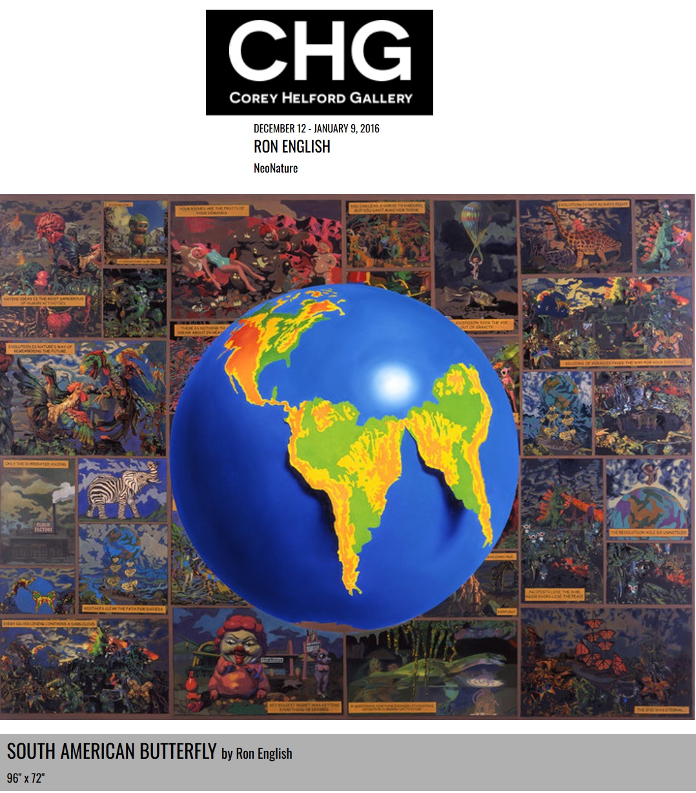
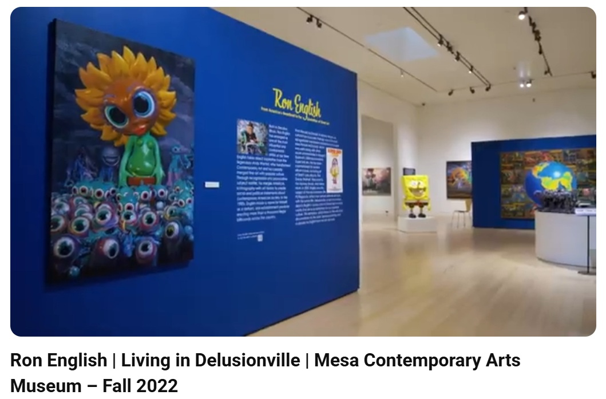

Exhibitions
Evolutionary Alternatives, Tribeca Grand Hotel, New York, New York, US, November 19, 2014.
Mapping the City, Somerset House, New Wing, London, England, UK, January 22–February 15, 2015.
Ron English NeoNature — We Are the New They, Corey Helford Gallery, Los Angeles, California, US, December 12, 2015–January 9, 2016.
Inaugural Exhibition, Allouche Gallery.
Living in Delusionville, Mesa Contemporary Arts Museum, Mesa Arts Center, Mesa, Arizona, US, September 9, 2022–January 22, 2023.
Evolutionary Alternatives, Tribeca Grand Hotel, New York, New York, US, November 19, 2014.
Mapping the City, Somerset House, New Wing, London, England, UK, January 22–February 15, 2015.
Ron English NeoNature — We Are the New They, Corey Helford Gallery, Los Angeles, California, US, December 12, 2015–January 9, 2016.
Inaugural Exhibition, Allouche Gallery.
Living in Delusionville, Mesa Contemporary Arts Museum, Mesa Arts Center, Mesa, Arizona, US, September 9, 2022–January 22, 2023.
Literature
Ron English, Fauxlosophy: The Art of Ron English (San Francisco: Last Gasp, 2016), p. 140. ISBN 978-0867196566.
Ron English, Original Grin: The Art of Ron English (Paris: Cernunnos, 2019), p. 181. ISBN 978-2374950938.
Notes
Ron English assembled and photographed a reference set as a model for this work.
This work appears in installation documentation for Living in Delusionville at Mesa Arts Center and is visible at 0:21 in Mesa Arts Center’s video documentation for the exhibition.
The work is documented on Corey Helford Gallery’s artwork page for South American Butterfly, under the exhibition Ron English NeoNature — We Are the New They.
It also appears at 2:00 in the video Ron English on His Newest Show “NeoNature: We Are the New They”.
Ancillary Documentation





Selected Online Circulation
Selected examples of the work’s online circulation, reproduction, or discussion. This list is not exhaustive; it is intended to document representative appearances of the image beyond formal exhibition and publication records.